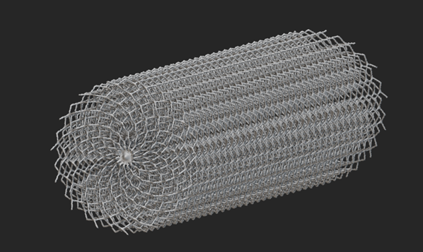
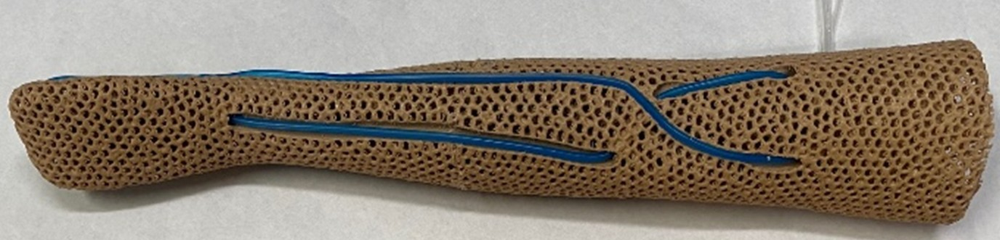
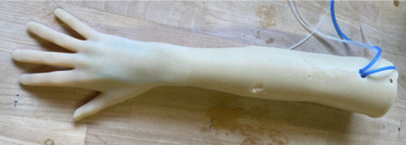

PRACTIV: An IV Training Arm That Behaves Like a Patient
Nurses learn to place IVs on models that are nothing like the people they will treat. We built one that pushes back.

The Problem
Peripheral IV insertion is one of the most common procedures in any hospital — and first-attempt success rates among staff nurses can be as low as 44%. Every failed attempt means another needle stick for the patient, a delay in treatment, and added cost.
The training equipment is a large part of why. We looked at what was on the market and found the same four failures repeated across nearly every commercial trainer:
- Oversimplified anatomy. Veins sit shallow and obvious, so learners never practice the hard part — finding one.
- No tactile realism. The material doesn't feel like tissue, so the muscle memory doesn't transfer.
- One body type. Models overwhelmingly represent lean, light-skinned males, leaving clinicians unprepared for everyone else.
- No complications. Rolling veins and fragile tissue — the cases that actually cause failed sticks — simply aren't simulated.
The result is a training gap: learners become proficient in a controlled environment and remain underprepared for real patients.

What We Built
Working with UW's Engineering Innovation in Health program and the Center for Research and Education in Simulation Technologies (CREST), we developed PRACTIV: a modular IV training arm built around anatomical data rather than convenience.
Key features
Anatomically sourced vein map
Vein placement from hand to upper arm derived from the MoHSES™ female dataset — a body type commercial trainers largely ignore.
Lattice tissue core
A 3D-printed TPU lattice tuned so puncture force lands in the 1.25–3.2 N range measured on real tissue.
Replaceable silicone skin
Cast in multiple pigmented skin tones and swappable, so one arm covers many patient presentations.
Pressurized flashback
A 5–15 mmHg fluid system delivers real blood flashback the instant the lumen is entered.
Rolling vein simulation
Veins that slip under the needle, forcing learners to practice proper stabilization.
Full-body integration
Compatible with MoHSES™ systems for scenario-based team training.

How We Got There
Grounding the design in clinical practice
Before drawing anything, we interviewed and observed nurses, clinicians, and trainees to understand where IV training actually breaks down. Using Cognitive Task Analysis, we mapped the decision points and manual skills a successful placement requires — which told us exactly which physical cues the trainer had to reproduce and which we could skip.
Iterating on the hard parts
Five rounds of prototyping, each driven by clinician feedback rather than our own assumptions:
- Material testing to hit realistic skin puncture forces (1.25–3.2 N)
- Lattice optimization in nTop to tune tissue compliance independently of skin
- Silicone formulation refinement for feel and durability across cast batches
- Vein depth and routing adjustments against anatomical review
- Integration of the pressurized fluid loop for flashback
Manufacturing
- TPU lattice core printed via fused filament fabrication
- Custom silicone casting with pigmented skin tones
- Co-extruded silicone veins with a blue outer layer for visibility under skin
- Modular assembly so consumable parts can be replaced without rebuilding the arm






Hollomon Health Innovation Challenge
Four weeks into the project we entered the Hollomon Health Innovation Challenge and were selected as one of 22 finalist teams from 70 applicants. I presented our pitch to a panel of investors and healthcare innovation experts, covering the clinical need, our technical approach, and the market analysis behind it.
Getting that validation early mattered more than the funding did — it confirmed we were solving a gap the simulation market recognized, before we had committed to a manufacturing approach.

Validation
We ran a formal usability study with eight participants — five nurses, one surgeon, and two simulation technicians — comparing PRACTIV head-to-head against a leading commercial IV trainer.
System Usability Scale
Anatomical Fidelity
- Soft tissue compliance — p = 0.0003
- Vein coloring realism — p = 0.0045
- Needle insertion feedback — p = 0.016
- Skin tone realism — p = 0.024
- Vein palpation fidelity — p = 0.031
Educational Value
- Potential to train to professional competence — p = 0.043
- Likelihood of curriculum adoption — p = 0.031
PRACTIV rated significantly higher than the commercial trainer on every realism dimension we measured, and was the only one of the two to clear the standard acceptability threshold on the System Usability Scale.

Where It Stands
PRACTIV showed that pairing advanced manufacturing with genuine user research produces training hardware that measurably outperforms what clinicians are currently issued. The work was published as “Development and Verification of a Novel Peripheral Intravenous Catheter Training Device” (Cho et al.) in Simulation in Healthcare.
What we established
- Statistically significant improvement over a commercial trainer across realism, usability, and educational value
- A modular architecture that keeps consumable parts replaceable
- Feasibility of 3D-printed compliant lattices as a tissue analog in medical simulation
- A base platform that extends to additional skin tones, body types, and pathological conditions
What comes next
- Training-effectiveness studies that measure learner performance, not just perceived realism
- Expanded anatomical variation and patient scenarios
- Integration into team-based full-body simulation environments
- Commercialization pathway